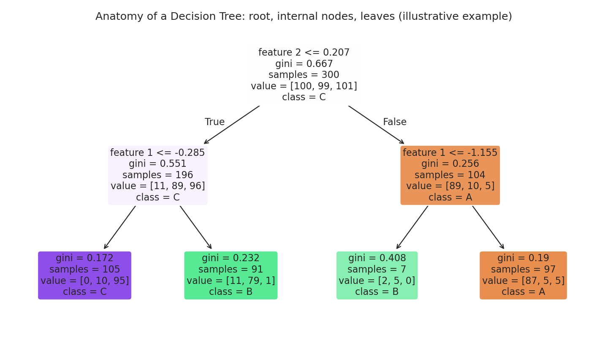
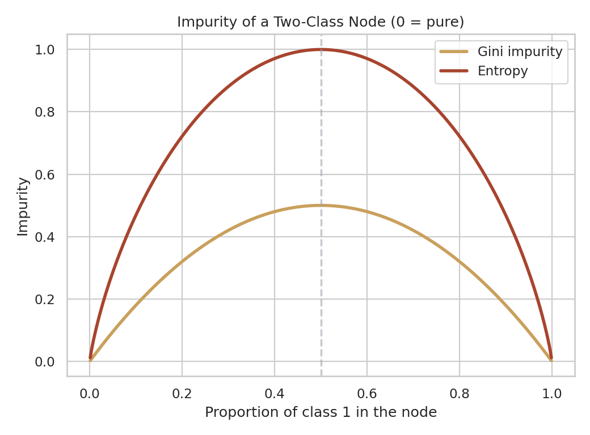
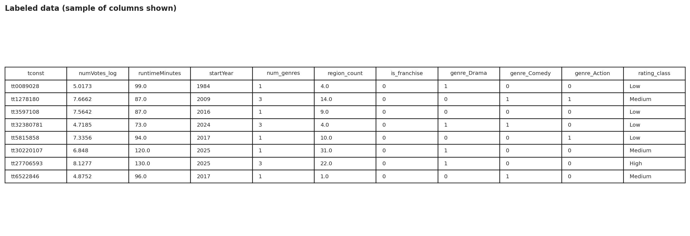
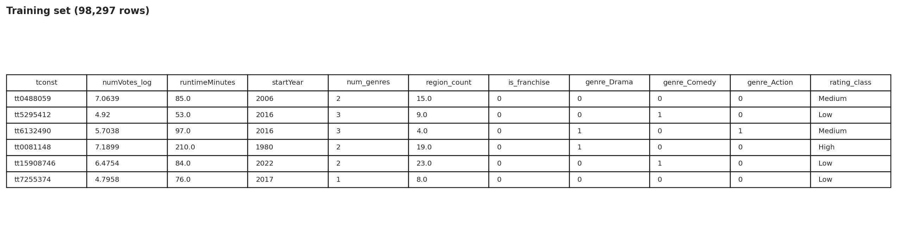
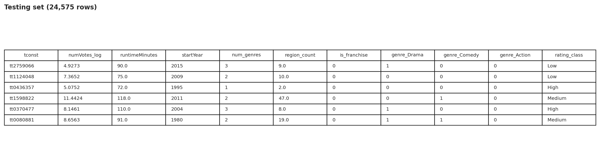
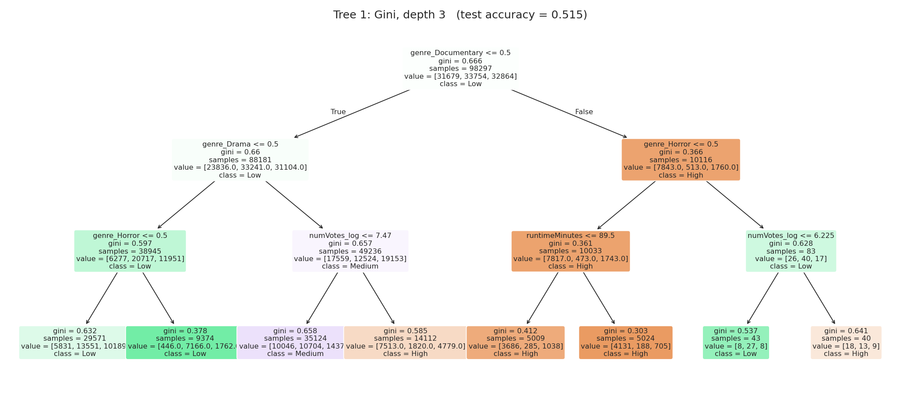
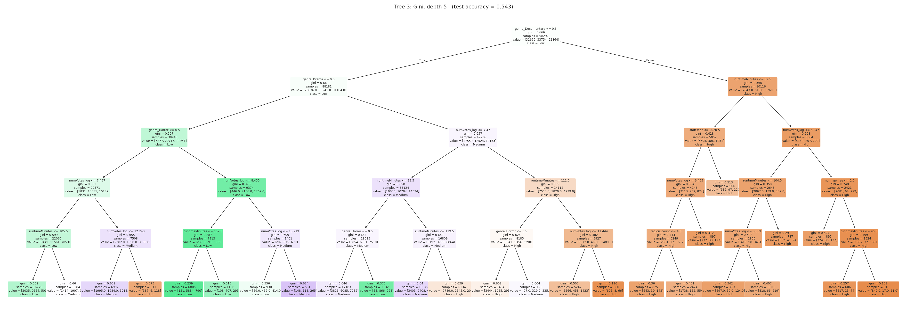
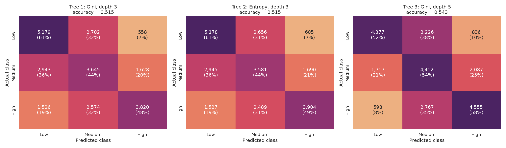
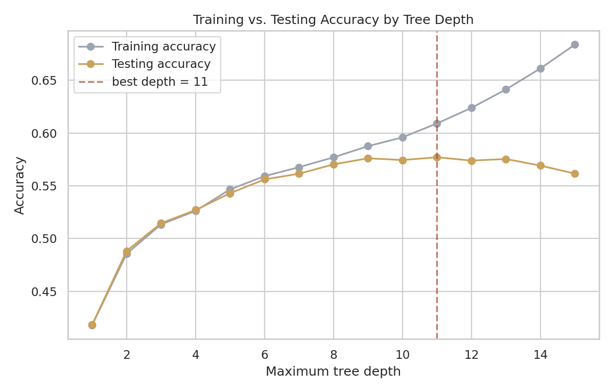
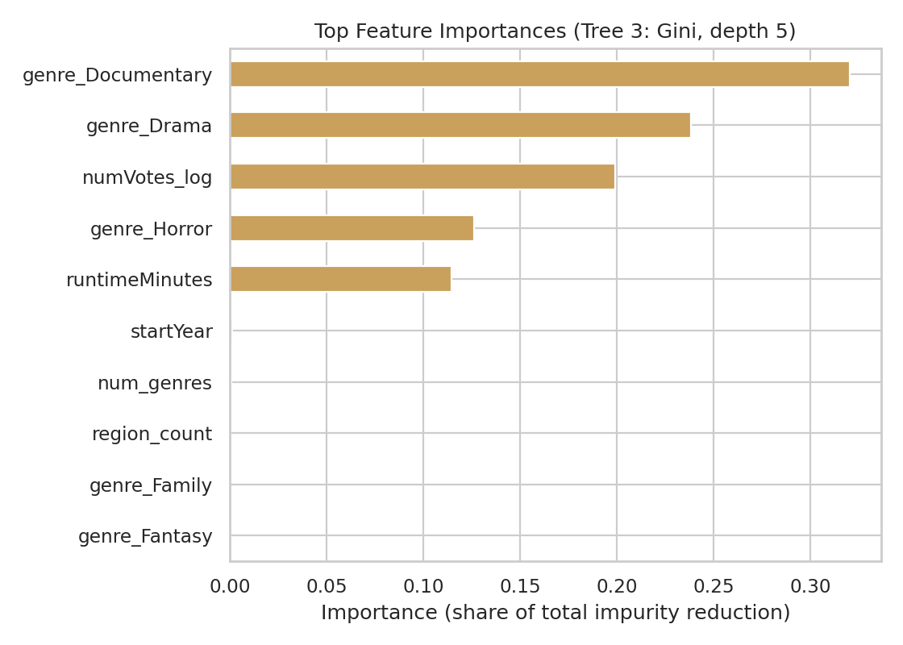

Section 06
Decision Trees
Learning a readable set of yes-or-no rules that sort films into the Low, Medium, or High rating tier.
(a) Overview
A decision tree is a supervised model that predicts an outcome by asking a sequence of simple questions about an item's features, each answered yes or no, until it reaches a final answer. It is drawn as an upside-down tree. The root node at the top holds all the training data and asks the first question. Each internal node asks a further question, such as "is the runtime at most 104 minutes?", and sends items down a left or right branch. Each leaf at the bottom holds no more questions, only a prediction: the most common class among the training items that reached it. Trees handle both classification and regression, accept numeric and categorical features, need no feature scaling, and, most importantly, can be read and checked by a person. That is why they are used in credit decisions, medical triage, customer-churn analysis, and any setting where the reason for a prediction matters as much as the prediction.

An illustrative tree on toy data (not the movie dataset), showing the root, internal nodes, branches, and leaves.
How a tree chooses its questions: Gini, Entropy, and Information Gain
A tree is grown from the top down. At each node it tries many candidate questions and keeps the one that makes the resulting groups as pure as possible, meaning each group is dominated by a single class. Two common measures quantify impurity, and both equal zero for a perfectly pure node and are largest when the classes are evenly mixed:
Gini impurity = 1 − Σ pᵢ²
Entropy = − Σ pᵢ · log₂(pᵢ) (pᵢ = share of the node belonging to class i)Gini is slightly cheaper to compute (no logarithm), while entropy, borrowed from information theory, measures how much "surprise" remains in the node and penalizes mixed nodes a little more steeply. In practice they usually choose the same or very similar splits. To judge a candidate split, the tree compares impurity before and after. Information gain is the parent node's impurity minus the size-weighted average impurity of its child nodes. The split with the largest gain is chosen. (With Gini the same quantity is often called Gini gain.)

A small worked example
Suppose a node holds 10 films: 6 rated High and 4 rated Low (hypothetical numbers chosen to be easy to check by hand). Two candidate questions are compared.
- Parent node: Gini = 1 − (0.6² + 0.4²) = 0.480; Entropy = −(0.6·log₂0.6 + 0.4·log₂0.4) = 0.971
| Candidate split | Left child | Right child | Weighted Gini | Gini gain | Weighted entropy | Information gain |
|---|---|---|---|---|---|---|
| A: runtime > 100 min | 5 films: 4 High, 1 Low | 5 films: 2 High, 3 Low | 0.400 | 0.080 | 0.846 | 0.125 |
| B: 2 or more genres | 4 films: 4 High, 0 Low | 6 films: 2 High, 4 Low | 0.267 | 0.213 | 0.551 | 0.420 |
For Split A, the left child has Gini 1 − (0.8² + 0.2²) = 0.32 and the right child 1 − (0.4² + 0.6²) = 0.48, so the weighted Gini is (5/10)(0.32) + (5/10)(0.48) = 0.40 and the gain is 0.48 − 0.40 = 0.08. For Split B, the left child is perfectly pure (Gini 0) and the right child has Gini 1 − ((1/3)² + (2/3)²) = 0.444, giving a weighted Gini of (4/10)(0) + (6/10)(0.444) = 0.267 and a gain of 0.213. Split B produces more than twice the gain of Split A under Gini and more than three times under entropy, so the tree would choose Split B. Both measures agree on the winner.
Why so many different trees are possible
For any dataset there are infinitely many trees that could be built. A tree can ask about any feature at any node, and the same feature can be asked about again lower down. For a numeric feature, the threshold can be any real number: a cut at a runtime of 104.5 minutes and a cut at 104.9 minutes may send exactly the same films left and right, yet they are different trees. Questions can be arranged in different orders, depth can grow without limit, and stopping or pruning rules can end branches early or late. Many different trees fit the same training data equally well, and a tree grown until every leaf is pure will fit the training data perfectly while generalizing poorly. Because the best possible tree cannot be found by trying them all, practical algorithms grow one tree greedily, choosing the best single split at each step, and limit its size. This is why this project builds and compares three different trees rather than treating any one as the answer.
(b) Data Prep
Labeled data
Supervised learning requires labeled data: every film must come with its correct answer so the tree has something to learn from and be scored against, and only labeled data can be used. The label is the same rating tier used on the Naïve Bayes tab: Low, Medium, or High, created by cutting the average IMDb rating at its 33rd and 67th percentiles into three equal-sized classes. The rating itself is excluded from the inputs. Because scikit-learn trees require numeric inputs, every feature is numeric: log vote count, runtime, release year, number of genres, number of international regions, a 0/1 franchise flag, and twelve 0/1 genre indicators. Trees need no rescaling, so the values are used as they are.

Missing — add assets/labeled-data-sample.png')">Link to the labeled data: data/labeled_data.csv
Training and testing sets
The labeled data was randomly divided, with stratification so each class keeps its proportion, into a training set (80%) used to grow the trees and a testing set (20%) used only to score them. This is the identical split used for Naïve Bayes, so the two methods are compared on exactly the same films.
The two sets must be disjoint. Decision trees are especially prone to memorization: a deep tree can carve out a leaf for nearly every training film, and tested on those same films it would look nearly perfect while knowing nothing useful about new ones. Scoring on films the tree has never seen is the only way to measure whether it learned real patterns. Disjointness was checked in code, which confirmed that no film appears in both sets.

Missing — add assets/train-set-sample.png')">
Missing — add assets/test-set-sample.png')">Links: data/train_set.csv · data/test_set.csv
(c) Code
Python with scikit-learn. Full script: scripts/decision_trees.py (the data prep at the top of the file matches the Naïve Bayes script, and both load the same saved train/test files).
from sklearn.tree import DecisionTreeClassifier, plot_tree
from sklearn.metrics import accuracy_score, confusion_matrix
trees = {
"Tree 1: Gini, depth 3": dict(criterion="gini", max_depth=3),
"Tree 2: Entropy, depth 3": dict(criterion="entropy", max_depth=3),
"Tree 3: Gini, depth 5": dict(criterion="gini", max_depth=5, min_samples_leaf=500),
}
for name, params in trees.items():
clf = DecisionTreeClassifier(random_state=42, **params).fit(X_train, y_train)
pred = clf.predict(X_test)
print(name, accuracy_score(y_test, pred))
print(confusion_matrix(y_test, pred, labels=["Low", "Medium", "High"]))
plot_tree(clf, feature_names=feature_cols, class_names=list(clf.classes_), filled=True)
(d) Results
Three different trees were grown on the same training data. They differ in splitting measure and size, which shows how much the choice of tree changes both the rules and the accuracy.
| Tree | Settings | Leaves | Train accuracy | Test accuracy |
|---|---|---|---|---|
| Tree 1 | Gini, max depth 3 | — | — | — |
| Tree 2 | Entropy, max depth 3 | — | — | — |
| Tree 3 | Gini, max depth 5, min 500 films per leaf | — | — | — |
| Baseline | Always guess the most common class | — | — | — |
Fill from your console output or dt_metrics.json.
Tree 1 — Gini, depth 3

How to read a node: the first line is the question (films answering yes go left); below it
are the node's impurity, the number of training films reaching it, and value, the count of
films in each class in alphabetical order (High, Low, Medium). The color shows the majority class, and
darker means purer.
Tree 2 — Entropy, depth 3
Tree 3 — Gini, depth 5

Confusion matrices and accuracy

Rows are the actual class, columns the predicted class; each cell also shows the share of that actual class.
How deep should a tree be?

Which features matter most
